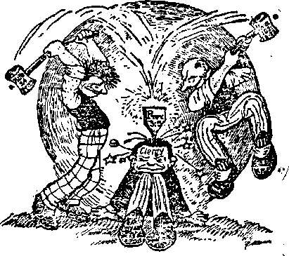
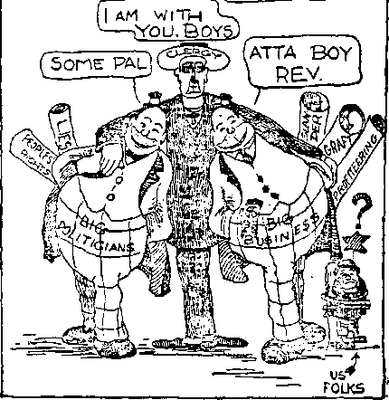

roL. 4 WEDNESDAY, MARCH 24, 2923 NO. 91
CONTENTS of the GOLDEN AGE
LABOR AND ECONOMICS
Distress of Nations——.355 The Old World Dying...—....358
The Old World____—..... 355 New world Beginning
FINANCE—COMMERCE—TRANSPORTATION Am I my Brother's Keeper? ..............—, ____
POLITICAL—DOMESTIC AND FOREIGN
Why a Soldier Bonus?_____
The City of Cleveland---------------------------------------_
Reports from Foreign Correspondents.__ 3gg
SCIENCE AND INVENTION
Disintegrating the Atom....373 a Glance at the Heavens....373 Is There Life on the Moon? 375 Lunar Influences and
The Planets in Order...—.—37”
Dur Own Planet, the Earth 877
Our Neighbors the Mar
The Heavenly Itinerants....380
TRAVEL AND MISCELLANT
Impressions of Britain (5) 359
First Impression—Honesty 360
Dignity and Klndnesa—__.862
Differences of Pronunciation — —..-303
Difference# in Use of Worts 363
Evidences of Economy—366
RELIGION AND PHILOSOPHY
Sending the Idea Home (Cartoon t ?■.
An Unholy Alliance (Cartoon)— ...—372
Heard in the Office (No. 2)___---
Studies in the “Harp of God”..—.------------
MiUibed mry other Wmarnftf st 1* Coueort Binet, Brooklyn. N. Y......0. 3. A
by WOODWORTH, EVDGDKB Ud MASTIN CLAYTdS J. IVGQDWQKTS ....... Editor C. E. STEWART........A»lttaat Edit®
BOBEHT J. MARTIN .... Busiaen Manaytf WM. F. HUDGINGS......Bec'y and Treaa.
Copartneri tod proprMtan. AdOnaa: 18 Concur* Street. Brooklyn, N. Y......U. S. A
Five Cents a Copy — 31.00 a Team foreign omens '. British : 34 Craven Terrace, Lancaster Gate. London W, 2; Canadian: 270 Dundas St. W.. Toronto, Ontario : Australasian : 495 Collins St., Melbourne, Australia* Make remittances to The Golden Aga ■swwd a* aawt-dwa matter at Brooklyn. N. X Mr tto Act af Mertt I. lift.
V«iam« FV Brooklyn, N. Y., Wednesday, Mar. 14,1923 . . ______
THE . OATTBB— PROPOSED REMEDY — THE BEAL AM ADEQUATE REMEDY
”0n the earth anguish of nations, in embarrassment, sea and surge surrounding, men fainting from fear and expectation of the things overtaking the inhabited earth”—Luke 21:25, 26, Rotherham.
YOU will be interested in the above words because they so completely describe the conditions now existing, although written nearly nineteen hundred years ago. They are words of prophecy spoken by Jesus and are now being fulfilled.
Suddenly in 1914 the World War began, $ either directly or indirectly affecting all the nations of the earth. National leaders stated that the World War would result in a more complete democratic government of the people. The League of Nations treaty, it was claimed, would enable the nations to establish peace and * prosperity. Bat disappointment has been the experience. The great war was followed by a terrible famine in many countries of earth, also by a devastating pestilence. Disease always accompanies famine. There also came revolution after revolution in various parts of the earth. ■ The finances of Europe are either wrecked or in course of rapid disintegration. Business is paralyzed. Labor is pitted against capital, and capital against labor; and the breaking point is almost momentarily expected.
All the nations of earth are embarrassed *- more or less; and the common people grow more restless. Like the waves of the sea, they surge to and fro. Men, seeing their life’s sav-t ings disappear in a day, and feeling that the
future bodes no good, everywhere are growing weary and faint. Bolshevism, like a hideous monster, has appeared on the horizon, destroying some nations and knocking at the door of many others. These calamities are rapidly overtaking the inhabitants of the earth.
The above facts are admitted by every one who thinks. The real cause and an adequate ■ remedy are diligently sought. The thinking man asks hhnself: Why do these distressing con-r ditions continue! Is there no real remedy!
OUR purpose here is to answer these question^, giving the real cause for the distress and the only adequate remedy. As you read, study the illustration on the cover page. It contains a great amount of history briefly stated, and bearing directly on the questions at issue. Some knowledge of the history of the world is essential to an understanding of the present distress and to how it can be remedied.
The illustration pictures Eden, the place of the beginning of man’s history. There he was perfect. The serpent, representing Satan the devil, caused man to sin, for which he was sentenced to death and expelled from Eden, his perfect home. Thereafter his children were born, imperfect; hence under condemnation. Later, God caused holy men to write the history of these things, inspiring their minds to write it correctly, which history we have in the Bible.
Man resorted to his own devices to govern himself. Angels, leaving their heavenly estate, materialized as men and mingled with humankind. The whole world turned to wickedness; and so great was this wickedness that God declared that He would destroy and did destroy the world in the deluge. Noah and his family were the only ones carried over from that old world into another or new world, being saved in the ark which he builded at God’s command.
After the flood a new world began, which has now grown old. Mankind again multiplied. All then spoke one language. Some one proposed that a tower be builded by which they could go up to heaven. It was builded and named Babel, because there the Lord confused the speech ol all the people. Such is the reason for the many languages and tongues spoken from then until now.
There were some men who loved righteous-
B56 THE GOLDEN AGE BMon.yw.N.1.
Dess, among whom were Job, Abraham; and others. With these men God dealt, making history for the benefit of those now on earth. In the light of this history and prophecy men can see the meaning of the present-day events.
In the course of time Jehovah caused the great Pyramid of Egypt to be builded, which by its geometrical measurements and construction pictures in stone the great divine plan.
To Abraham God made a promise to the effect that some day in the future He would bless all the families of the earth, by offering to all a full, fair, and complete opportunity for life, liberty and happiness. For the purpose of picturing this coming blessing God formed the descendants of Abraham into a nation and called that nation Israel. He gave them His law, by which He foreshadowed a better thing to come: namely, the blessing of mankind. With that nation He established the true religion: namely, the worship of Jehovah God. Satan, continuing his method of fraud and deception, established a false religion amongst the nations round about, misled and overreached them, causing them to erect great temples wherein they worshiped images and demon gods.
The nation of Israel, unfaithful to its covenant with God, was overthrown, Jehovah permitting the gentiles to establish a universal empire. This occurred in the year 606 B. C.; and God's prophet foretold that this gentile dominion would continue for a period of 2520 years. It is seen, then, that the legal end of the gentile times must be in 1914 A. D.
God promised to provide redemption of man from death, and in due time to destroy death and the grave. He sent His beloved Son Jesus into earth for that purpose. Jesus was put to death on the cross. He arose from the dead, the divine Christ Jesus. Thereby was provided the redemption for all mankind; and in due time this redemption and deliverance must and trill be granted to all men.
During the past nineteen hundred years honest men have been striving to establish ideal forms of government; but selfish men have, under the influence of Satan, controlled the affairs of the nations of earth.
During the past hundred years there has been a tremendous advancement in knowledge and invention. Such was foretold by Jehovah through His prophet Daniel.—Daniel 12:4.
During that brief period of time men have formed great banks and other financial insti- ? tutions, erected towering buildings, brought from the earth great quantities of iron and steel, builded mighty ships to ply the seas, and great railway systems and other means of rapid transit; they have controlled the land and the sea, and later the air. Giant corporation* have grown until they have come to control th* affairs of earth, forming the ruling factors of the nations. Working together with these have been and are professional politicians find an apostate clergy. This combination has made the laws and influenced improperly the enforcement thereof. They have builded great universities and other institutions of learning, controlled the curriculum thereof and shaped the course of the rising generation. Eager for more power, they have formed great armies and builded mighty battleships; and withal hav* grown proud and arrogant, dominating the peoples of earth. They have heaped up great treasure in the way of money and property for the** last days, where we now are, and as the Lord foretold they would.
For their own protection labor organization* have been formed. These have had unwise connsei and have often practised injustice. Strike*, accompanied by violence, have become a common thing. Between the upper and nether millstones the common people have suffered and yet suffer.
THE order of society existing from the dd-uge until now is designated the old world, legally ending in 1914. God had promised that at its end there should be a transition, gradually, from the old to the new order. His inspired writers wrote that the old world must pass away with a great, fiery time of trouble, even as the first world passed away with a flood; and that this should be followed by a new order of things, wherein dwelleth righteousness.—2 Peter 3:2-13.
The question was propounded to Jesus by His disciples: How may we know when we have come to the end of the world! He answered that the first evidence which would mark th* beginning of the end of the old order would be a world war, followed by famine, pestilence, revolution, and distress of nations, with perplexity, men's hearts failing them for fear and expectation of the things overtaking the peo-pies of earth. The conditions that we see today prove beyond question of a doubt that they are in fulfilment of the words of the Lord, showing that we are now in the transition period. The old world is dying.
All the efforts put forth by the premiers, the financiers, the clergy, or like conferences, to establish peace and order, will fail, because God foretold through His prophet that they must fail. (Isaiah 8: 8-10) The present condition argues more trouble; and this is corroborated by the words of Jesus, who states that following the present distress and perplexity of nations there shall be a time of trouble such as the world has never known; and that so great will it be that all the human race would perish except for the fact that the Lord will intervene and stop the trouble, because it is time to establish a new order, a new world.
Satan is the god (invisible ruler) of the old world that is now dying; and soon Satan will be restrained of his power, and his reign of unrighteousness cease.
THE new world or order of things will permanently establish righteousness on earth. Christ Jesus will be the invisible ruler of this world; and through His visible representatives He will establish lasting peace, prosperity and happiness and life amongst mankind. The evidence above stated concerning the passing away of the old world is likewise proof of the presence of the Lord. In fulfilment of His own words, He has taken unto Himself Eis power and is dashing to pieces the old order, that the new may take its place. His death and resurrection are a guarantee that all men shall have an opportunity for life. He gave His life a ransom for all, to be testified in due time to all; and the time for the people to know these things is now here.
God's prophet plainly states that when His judgments are in the earth the people will learn righteousness. In the language of His prophet, "the kingdom of the Lord shall be established over the other kingdoms, and shall be exalted above them; and all the nations shall flow unto it. . . .’He'shall judge among the nations, and shall rebuke many people; and they shall beat their swords into plowshares, and their spears into pruninghooks: [and in the new world] nation shall not lift up sword against nation, neither shall they learn war any mare” That will be a time of universal peace. Then, as God's prophet says, the people will build houses and live in them — not that a few will build houses and others live in them provided they can pay the rent. Then will the people, young and old, be taught the truth and righteousness, and be no longer deceived by error. Then every man shall have his own home and dwell under his own vine and fig tree, and shall not fear any one, because no wicked or evil thing shall be permitted. Then the commerce of the earth will be for the benefit of all and not selfishly for the gratification of the avaricious few. Then the earth shall yield its increase and become a fit habitation for man. Then the desert shall blossom as the rose and the waste lands become tillable, and the arid places habitable, because God formed the earth for man's habitation and has promised to bring it up to a fit condition for man.—Isaiah 2:2-4; 65:17-25.
■ That will be the time spoken of by the Apostle : "Times of refreshing shall come, . . . and God shall send Jesus Christ, who before was preached unto you, whom the heavens must retain until the time of restoration of all things, which God hath spoken by the mouth of all his holy prophets since the world began." (Acts 3: 19-21) The twenty-four prophets who wrote the old Bible foretold these coming days of restoration. Jesus, referring to the same time, said: "If a man keep my saying, he shall never see death"; and again: "Whosoever liveth and be-lieveth in me shall never die." (John 8:52; 11: 26) That is the time referred to by the Prophet when, if the wicked shall turn away from their wickedness and do that which is lawful and right, they shall live and not die. Then will the prayer be answered which Jesus taught His disciples to pray: "Thy kingdom come; thy will be done on earth as it is done in heaven.”
For this time of righteousness on the earth orthodox Jews hoped long centuries ago. Catholics and Protestants, all Christians, regardless of denomination, have prayed for it for the past nineteen hundred years. That good time is just at'hand. The Lord is now present. The kingdom of heaven is at hand. The old order is passing out; the new is coming in. The day of deliverance is at the door.
The jubilee system that God gave to the Jews enables the student of prophecy to measure the time when the restoration of the world of
B58
■ kind will begin. The Jews were required by the law to keep seventy jubilees; fifty years between each jubilee making a total of 3,500 - years. They were to begin to count this time
। when they entered the land of Palestine, which
, they did in the spring of the year 1575 B. C.
j It was to mark time until the days of restora-
i tion. That 3,500-year period ends with the con-1 elusion of 1925. Therefore it may confidently be expected that war, famine, pestilence, and revolution will reach a climax and quickly pass away about that time; and peace, prosperity, . and happiness will be quickly ushered in. The , new order being fully established, those who . are obedient to its arrangement will live and not die. For this reason it can be confidently stated now that millions living at this time on the earth will never die. We are in the transi-; tion period.
t Instead of becoming discouraged, the student - of prophecy should look by faith beyond this dark night to the new day, the Golden Age that ; is just dawning. The whole plan of God relative to man, which covers a period of 7,000 years, reaches a climax in the restoration of man and his perfect home on earth.
The Golden Age cannot afford the space to set forth these matters in full, because of the multitudinous Scriptural citations and proofs. We are pleased to call attention to the fact that the International Bible Students Association publishes a series of books in which all these matters are clearly proven from the Scriptures. The small book, “Millions Now Living Will Never Die,” contains more than four hundred Scriptural proofs to establish the truth of that assertion; “The Harp of God,” in eleven chapters, discusses the fundamental points; while the seven volumes of “Studies in the Scriptures” examine the whole question in detail. The International Bible Students Association is printing and sending out these books by the million, disposing of them at cost and often less than cost; the object being to get the message to the people.
The most stupendous question before mankind today is the restoration of man and his perfect home. With the passing away of the old world and the coming in of the new, the desire of all nations will come. The Messianic kingdom is the only remedy for the ills of humankind. It is a certain and specific remedy, [t is God's remedy and it will result not only
• - & M. *
. . -
in establishing peace and prosperity, but right- ■ eousness and everlasting life upon earth to all of those who desire to do right and who will try to do right. ■
The Golden Age is trying to do its part in enlightening the people. If you are. interested in your own welfare and that of your family and your neighbors, pass the message of good tidings on to others. Nineteen hundred years ago the angel from heaven brought to the shepherds in the field at Bethlehem the message: , "Behold, I bring you good tidings of great joy r which shall be unto all people.” We have come to the day when that message of glad tidings must now go to all people. Let every one who loves righteousness delight in passing the glad message on to others. .
•'SENDING THE IDEA HOME’,
Millions no'v livmg,..will never die!
In the world is a class of individuals who have what a bishop has aptly named the "ecclesiastical mind.” Its chief characteristic is that it has become ossified, which means that the skull is practically impregnable to a new thought. As the creeds are inflexible and not permitted to advance with civilization, those who are creedbound are in the dark and exceedingly loath to depart from traditions. But the light will break through— eventually.
LONDON, in its 700 square miles of area, has 7,000 miles of streets. The American did not, of course, try to go all over the city, but he did get around considerably. London has, without doubt, the best facilities for getting around of any city in the world. There are no elevated railways to mar the beauty of the city and to disturb it with their roar; and there are no tram-cars, except upon the outskirts, and therefore no rails to mar the streets or trolley poles to obstruct the sidewalks.
How, then, do the Londoners get about 1 In ' the first place, they have the finest system of t underground railways in the world. One can go anywhere in London without going out of the tubes; and instead of the roar and screech which prevents conversation in New York subways, the tubes are so designed that uninterrupted conversation can be carried on in an > ordinary tone or even a low tone of voice. To carry on a conversation in the New York subway one would have to have a voice like a steam calliope. The speed seems to be about the same in either city, however. The British ears are more comfortable than the American cars; there > are arm-rests marking off the exact space allotted to each passenger, and if one gets a seat he also gets a comfortable arm-rest along with it The subways in London are so numerous that there seem to be always seats enough for everybody. And the fares are extremely rea-f sonable. They are from one penny (2c) up, depending upon where you wish to go.
In the second place, London has the finest surface transportation in the world. The London General Omnibus Company has 142 bus lines traversing all parts of the city. It is re> grettable that they are disfigured by signs of Dunlap's “Tyres’’ and other posters until their appearance is ruined, but they render most ex-■ cellent service. They are double-decked, the . same as the tram-cars used all over Britain, except that the top decks of the omnibuses are ? open to the weather. These buses are the same as the Fifth Avenue buses in New York.
HE zone system of car-fares applies to all omnibuses, tram-cars and underground rail-
F ways, instead of, as in America, a single fare which Entitles one to go anywhere he pleases.
• > • The conductor of the omnibus has in his hand a bank of tickets of six different colors. When a passenger boards the car he states whether he want a ride for a penny, three half-pennies, two pence, three pence, four pence or five pence; and in accordance with his request he is issued a white, buff, blue, red, green or salmon-colored ticket. The route over which the bus travels is divided into twelve to fifteen zones, printed in order upon the ticket As the ticket is issued to the passenger the conductor punches it so as to show the zone at which the passenger boarded the car; and as the passenger glances at his ticket he can see immediately opposite the punch mark not only the place where he boarded the car, but also the place at which he must alight or pay another fare. The tickets must be shown to the conductor at any time upon request. This system works well in practice and is just. .
While we are on the subject of transportation and communications we notice a few related items. All the telegraph and telephone service of the British Isles is administered by the Post Office Department, a system which makes for economy and efficiency; but telephones are not nearly so popular as in the United States. In America almost everybody in what might be called the middle classes has a telephone; in Britain telephones are a rarity. The number of telephones per 100 of the population in various countries is as follows:
United States_________.____________
Italy.3
THE United Kingdom has 240,000 miles of highway, mostly macadam, very little hard concrete, which it keeps in most excellent condition at a cost of about £100 per mile per year. There is general complaint that the char-a-bancs, heavy vehicles for carrying sightseers or other travelers from one village or city to another, are making it harder and harder to keep the roads in condition; but the problem seerps to be well handled thus far and the roads all that could be expected. There are not so many fifteen-ton. trucks and other road-wreckers at
•w
in the United States; but there are numerous road locomotives, a type of vehicle never seen here. These are really locomotives, with smokestacks in front, looking much like the locomotives on the railroads; and they usually have one trailer. Trailers are seen, but are not numerous in America. Years ago we did have in the United States a traction engine of which the British street locomotive seems to be a modern development.
On account of the fact that Britain is an island. and has great numbers of excellent ports and deep rivers reaching far into the heart of the island, and in view of the fact also that Britannia is the world's great sea power, much greater attention is paid to waterborne commerce than in the United States. All the rivers are connected by canals and in all there are 4,673 miles of canals and canalized rivers in the United Kingdom.
Much attention is paid in England to the raising of homing pigeons, not for any mercenary reason but because Englishmen love animals and love sport. This is not saying that other people do not love animals and love sport, too; but there is friendly rivalry among raisers of these pigeons, and the custom exists of neighbors shipping rival pigeons to the far ends of the Isles and then malting wagers as to which bird will get home first after its release. There are immense numbers of birds of all kinds in England. And crows 1 Crows and seagulls 1
Carrier pigeons have done some wonderful things in the world's history. Probably the most wonderful of all was the pigeon released by Sir John Franklin when he was frozen in while on one of his Arctic expeditions. Unable to move, and seeing no way of escape, Franklin released one of his carrier pigeons; and the little creature arose in the wilderness of snow and ice far to the north and west of Labrador, wheeled about two or three times in the upper air, and headed straight for its home in far-off England, three thousand miles across the trackless ocean, where it arrived exhausted three days later. Who put it into the head of that liftle creature to know exactly which way to go i^ order to reach its far-off home?
The pigeon trips in England are so short as to be only a pleasure for a bird. The utmost extremity of flight in Britain proper would be from John O’Groat's hexagonal house (so built in order that his six boys might each have a > share of his estate without quarreling over it) ; in the extreme northeast corner of Scotland, to Land's End, in the extreme southwestern corner of England, a distance of only 876 miles, or . less than the distance from New York to Chiea- _ go, by rail.
PERHAPS you wonder what were the Amer* ican’s first impressions of the British people when seen in their native land. The Britishers ; wonder, too, forgetting that we have in Amer. < ica several millions of ex-Britishers whom we know and love and appreciate. But it is a little ’ different when one goes to England and finds himself in a land where practically everybody U a Protestant and where everybody speaks the American's own native tongue. In America there is the grandest chowchow of religions and nationalities on the face of the earth, and in a street-car one is likely to get every kind of language and every odor of garlic from every quarter of Europe. But he gets the ideas, too; and these ideas have made America the moat progressive nation under the sun.
The first impression that the American geta of the English is that they are the most honest people in the world, and this is in spite of the cabby incident in Liverpool. No matter where one goes or what one sees or handles there is every evidence that the article or articles have been made to render the utmost service, and the price shows that only a reasonable profit is asked or expected. This is not true in America, where the stores are filled with the cheapest qualities of flimsy materials and poorly made goods; and the one object in view seems to be profit, regardless of service. The very finest and best of goods can be obtained in America, too, but at outrageous prices, which people of moderate earning power cannot afford to pay.
The mail boxes in use in Britain look as if they had been made to withstand the fire of heavy artillery. They are apparently made of cast iron, are tubular in form, red in color of paint and about eighteen inches in diameter and five feet in height. In America the mail boxes are built-up metal boxes, rectangular in form. For letters only, the boxes are about 8 x 18 x 18 inches mounted upon iron posts. For newspapers and packages the boxes are much larger, perhaps 18 x 24 inches and four feet high, resting upon the ground, as do the boxes in Britain. The postmen in England wear helmets, flat on top, looking something like an inverted coal scuttle. The rubbish cans in London are as well made as the mail boxes.
' Nowhere in England did there seem to be in evidence any kind .of towels except what we know in Amprim as heavy crash towels; and this is a good thing. The so-called hand towel much used in America has so little absorptive power that when one has dried his face and hands on it the towel is done for until it has had time to dry out. The grades of toilet paper which are in common use in America could not be sold in England at all; the people would not have them, and they are a disgrace to the manufacturers and the dealers here.
HE American watched a force of men engaged in street repairing in London. First there was a bed of three or four feet of solid concrete, smoothed off on top as smooth as it could be made. Then wooden blocks, such as are in use in some places in America, were painstakingly fitted together; and when the workman was satisfied with his joint, he passed his hand over the surface to see if the top was perfectly smooth. It was not, and he took a plane and carefully pared off enough to insure the block being exactly level with its mate. Imagine such a thing being done in America!
The American before his departure for England saw men paving Hicks Street, in Brooklyn. Up through the center of the street a great steam-shovel ripped off the surface to a depth of about two feet, motor trucks carrying away the debris as fast as removed. Only a little way behind were the traveling concrete mixers, pouring their loads into the newly made excavations; and behind these was the asphalt paving apparatus. In one day two whole blocks were ripped out and replaced with what looks like a perfect pavement; but two years from now the British pavement, shaved off by hand planes, will be as good as when it was laid, and the people on Hicks Street will be complaining of the great holes which the heavy trucks have hammered into their newlaid road surface.
The English people do not have vegetable gardens adjoining their premises. The vegetable gardens are all in one place on the outside of the city. Here each family may rent a small area in which to raise the cauliflower, celery, Brussells sprouts, cabbages, turnips, etc., which are specially suited to the climate, and all of which are so good for the human system. There are no watchmen on these premises; the gardens of the whole city are there, all ranged side by side, and with nothing but narrow paths to separate one garden from the other. But do you suppose the Briton is afraid that anybody will take any of his garden stuff! Not a bit of it. He is honest himself, and expects every other Briton to be honest. And he usually is. The allotments, as these family gardens are called, commonly have little tool-houses on each allotment, presenting an odd appearance, though not displeasing to the eye.
On account of the climate it is necessary to wear woolen clothing all the year around in Britain, and there is no use trying to dispose of poorly made woolen clothing or mixed clothing in England. It is the world's center for fabrics, and the people know enough about them to. insist on such makes as will render real service. American tailors complain that they cannot get in America, at any price, such cloths as are commonly made and used in England. Another instance of the Briton’s desire for service rather than speed is the sign seen over a bakery, "Country bread, stone ground, retaining all the nutriment.”
HE second impression that the American gets of the Britisher on his home soil is that the British are the most polite, the most courteous, people in the world. This will be a surprise to many Americans who have formed the idea that the British are abnormally pigheaded, conceited and rude. This impression has come about through a mutual misunderstanding. The Britisher does not understand the American, and the American does not understand the Britisher.
The courtesy of clerks, waiters, and policemen is most surprising and most refreshing. The policemen do not carry clubs; there is no reason for them to do so anywhere. The American approaches a policeman in London and asks :"Can you direct me to Cavendish Square f* Back comes the answer: "Up this street to the right, then the second street to the left, and the seventh door up is the American consulate.”
862 n, qOLDEN AQE b^™. N. x, .
The American asks quizzically: "How do you know I am an American 1” And the London “bobby”gives the friendliest of smiles and says: "Oh, that is easy.”
And just here let it be said that no American in Britain need expect to hide his identity. He is betrayed by the length of his face, by his complexion, by his clothing, by the rims on his glasses, by his quickness of speech and movement, and by what seems to the Briton his peculiar intonation. Another Briton when asked, “How do you know I am an American?” answered: "Oh, by the twang; I met a number of them while I was in France and got quite used to it.”
The Americans are accused of "talking through the nose.” What really happens is that an American talks as if he had a cold and as if his nose were partly stopped; for when a person has a cold and his nose is in that condition, that is just the expression used here. Probably this difference is purely a climatic one, the salt and moisture in the British air making the nasal membranes more pliable than is possible in America.^ dry climate.
Dignity and Kindliness
VTDENCES of the Britisher's innate courtesy and dignity are on every hand. The following are some signs copied for the benefit of American readers. Compare them with the short, sharp and often discourteous signs found in America: “Off the bus first, please”; “Please abstain from the obnoxious habit of spitting on the floor”; “Visitors are respectfully requested not to walk on the grass”; “Passengers are earnestly desired to flush the pan before leaving”; “Passengers are prohibited from joining trains without first obtaining tickets”; “Gentlemen using the lavatory basins are particularly requested to leave them in the condition they would-like to find them”; “It is respectfully requested that passengers refrain from throwing into the pan any substance likely to choke the pipes or prevent a proper flow of water; otherwise serious discomfort to the passengers themselves may result and the closet rendered both disagreeable and useless.” An exception to this general courtesy is that Africans are always called “niggers" without any seeming effort to find a more agreeable name for those who have had the fate to be born into the world with black skins. ’
The only profanity which the American heard in ‘five weeks in England was on an occasion when he stepped to a ticket office at 9.27| a. m. and asked for a ticket to Bradford. Quick “ as a flash came the ticket and the change through the window, accompanied by the startling warning, “Yullhoftobodom quick abaht it; the train goes at 9. 28.” Americans pronounce “about” as if it were spelled “abowt," most Britishers as if it were spelled “abaht.” Yes I He caught the train, thanks to the Britisher’s warning, intended in all courtesy and kindness. .
A Briton will ride for two hours or four hours in the same compartment with another solitary individual of any nationality, and never utter a word to break the silence. His real reason for not saying anything is that he does not wish to give possible offense. He thinks the stranger may have reasons for wishing silence and does not wish to intrude. But let the stranger ask a question and he is all attention, eager to render any service in his power. In America two strangers would not be together five minutes before they would be engaged in animated conversation on some subject, and it might be any subject under the sun.
At the Briton's table the stranger is seldom or never asked to return thanks for the food; the host does that himself, fearing to embarrass his guest. This is directly contrary to the American custom, where as a mark of recognition or honor the stranger in invited to return thanks for the meat But the Britisher will polish his guest's shoes; and if he fails to warm the guest's bed with a hot-water bottle, he will apologize for it the next morning!
But while the Britisher is the soul of courtesy, he is not “soft” Thus, when Bunnymede, which is generally regarded as the birthplace of English liberties, was recently put up for sale, nobody would bid on it. Had this been in American hands the best parts of it would have £ been sold at great profits by a real estate firm, and the balance of it shoved off on the public at twenty times it real value as a result of some political deal.
WE HAVE already called attention to the fact that in Britain ticket offices are always called booking halls, and the word “booking^' is not pronounced “buhking” as it would be pronounced in America but the double vowel “oo” is drawn out so as to give its full sound, as though it were “bookeing ” There are other differences of pronunciation. The American pronounces the name of a popular newspaper as though it were spelled “Dayley Mayle’’; the Briton seems to the American to pronounce it as though it were spelled “Diley Mile,” but to his own ear it probably does not sound that way. The Briton probably pronounces the words “Mail” and “Male” differently, giving separate values to the “ai” and the "a”; the American pronounces them exactly alike. The American “raylewaye” sounds like “rilewye” in England. The American’s r’s vary with the climate, as they do in Britain. In Boston when they say “raw” it sounds like "rorr”; in New York when they say “New York” it sounds like “Nuyawk” and “Work” sounds like “Wuick”; in Scotland if a man is “drunk” he is terribly “drrrrrunk,” and no mistake about it; in England there is a softness to the r’s which is extremely musical. Nothing could be sweeter than to hear the English people sing and to note the softness of their pronunciation of such words as “Father,” “dear,” “here,” etc. They are accused of saying “Fathaw,” “deah” and “heah.” It is not true. They place a value upon the r, but it is too slight and too musical to be pronounced by those who have grown to maturity in America’s drier climate. Climate is the real explanation of many of these national differences.
Another item about English pronunciations is that they differ in different sections; and in some places, as in Northumberland county, it is claimed that in a distance so short as six miles there are deeply rooted dialects that continue as they have continued from time immemorial. Thus, in places that are near to one another, one village will pronounce America’s national beverage by a word that sounds like “waughter,” while another village calls it “wot-ter/’ It was in Northumberland County that a woman-who first saw a swing bridge is alleged to have made the surprising remark that “the warks o’ God are wonderfu; but the warks o' man are mair sae.” We do not guarantee the story, but it is current in the county itself.
THERE are certain words which the Britons use in a different way than they are used in America. An Amarim shoe is a British boot. An American Oxford or low shoe is a British half-boot. An American boot is a British topboot. The American blackberry is the British barberry. The American store is the British shop. The American toilet is the British lavatory. The American pie (but—and treason— not so good) is the British tart, and the American deep pie is the British pie. It is served with a tablespoon, and it is good. The American’s undershirt is the Briton’s vest, and the American’s drawers are the Briton’s pants. The American merchant tailor is the British bespoke tailor. The American barber shop is the British shaving saloon. The American boarding house is the British board residence. The American laundry is the British shirt-and-col-lar dresser. The American truckman is the British highway transport contractor. The American signs “Men” and “Women” in Britain are always “Gentlemen” and “Ladies.” A steam fitter has a steam joinery works. A street-cleaning department is a cleansing department. The delicatessen of America is unknown in Britain, and the fish-and-chip saloon and the tripe dresser of Britain are unknown in America- An American lunch for farm workers is a bagging in England. The ushers of America are stewards in England, the deacons are stewards, the porters are stewards, and the waiters are stewards. When a Briton cracks a good joke on you he is “pulling your leg.” But when an Amer-iean “pulls your leg” it is no joke; for it means he has carried through some plan to get money out of you to which perhaps he was not entitled and which you could ill afford to give bim. The British housewife uses the expression, “I did not have my fruit bottled,” and a drunken man is spoken of as “bottled up.” Some Britons use the expression “Aye” considerably, and the way in which they say it sounds very musical and, to an American, rather novel.
The most unusual use of words in a different sense- from what they are used in America and in other parts of England was in the West of England, where the dusty traveler was twice greeted by his host with the kindly inquiry, “Won’t you go upstairs and have a little swill right way before dinner t” For the convenience of the incredulous we give one of the Standard Dictionary's definitions of the word swill: “To drench oneself, as with water in washing, from the Anglo-Saxon Sicilian, to bathe." It will thus be seen that the word as used in the West of
n* GOLDEN AGE
England is the purest English, and is not to be confused with the Equid food for hogs more generally known in England and altogether in America as the only meaning of the word.
THERE are differences in foods between
England and America, but they are unimportant. British oysters are very small; American blue points are as large as the palm of the hand. The skin of a British peach is so soft, due to the cEmate, that it goes to market packed in cotton and must be marketed at once. The flesh of the American peach is soEd, and the skin is tough. Tomatoes in England are the size of eggs and are raised only in hothouses. British hothouse grapes are a dollar or more a bunch. The grapes are an inch in diameter and delicious.
The British have a very fine vegetable called marrow, which is something in taste and te$£ tore like the American summer squash. Pumpkins do not grow in Britain. Alack and alas; to think of going through life without the delectable joys of ever eating a piece of pumpkin pie! That one discovery ought to enable an American to forgive his British cousin anything.
In Yorkshire the British have a famous dish, Yorkshire Pudding, in texture something like an American flapjack fresh from the griddle; and Eke that same toothsome wheat-cake it must be eaten while hot and fresh, if it is to be as crisp and as tender as its reputation compels it to be and as it generally is.
The British always have on their tables quantities of stuffed or fat cookies called scones (and very good they are too), cocoanut baEs, tarts, and little cakes. They do, not go in for layer cakes or apple, mince, custard or lemon pies as much as we do in the United States; and ice-cream is a rarity. But they do have more, elaborate desserts than are generally seen on American tables. These desserts frequently consist of fruit, over which is poured custard, and on top of that whipped cream; and you had better believe the American when he teds you thatdt is. good. And then English puddings of all soijts are as famous in America as they are in England itself. In one place in London there was a sign, “New York ice-creams, American ices and sundaes, 1 shiUing, 1 shilling three pence, and 1 shilling sixpence/' or 22jc, 28c,
33 je. No British table is complete without a “tea cosy” to keep the tea warm. 1
British table manners are different from I American. In America the knife is never used except when strictly necessary, and frequently ; lies quietly beside the plate throughout the en- 1 tire meaL In Britain it is considered as poor ’ etiquette to lay the knife down as it is in Amer, ica to reverse the process. The American eats with the fork in his right hand, and uses it all too frequently as a scoopshovel instead of as a spear, as he is supposed to do. The Britisher J eats with the fork in his left hand and upside down, using his knife to help him load well the back of the fork; and without any desire to cause any international complications, candor forces the American to admit that it is astonishing how much can be loaded upon such an unhandy vehicle when wielded by a hungry and determined descendant of William the Conqueror.
The system of milk delivery in England is antiquated, unsanitary, and deplorable. In America all deliveries are in bottles; in England the deliveries are from large cans pushed around the streets in hand pushcarts. The British milk cans are large at the bottom and small at the top, instead of-cylindrical as in A-merira-
Pushcarts and Scaffolding
ONE sees more pushcarts of all sorts in five weeks in Britain than he would see in a lifetime in America. One of the most interesting vehicles of this sort was a kind of glorified baby carriage, or perambulator used for wheeling invalids or sightseers across the parks and even down the main streets. Sensible things they are, too. Nothing of this sort is to be seen in America, except on the boardwalk at Atlantic City.
One of the things that makes for the beauty _ of London and other Anglican cities is the great number of curved streets, curved corners, and curved buildings. It takes off the stiffness and rigidity characteristic of the central portions of so many American cities. There are narrow streets here and there, but the streets as a whole are wider than they are generally supposed to be. In some places the sidewalks are too narrow for the throngs of people who would use them, and as a consequence it is a very common thing to see people walking in the street near the curb. The curbs are of less height than j in America, showing that there are fewer heavy .storms.
There are the most astonishing ladders in use in London, six stories high and as straight as an arrow. Where the wood for such ladders could be found is a mystery; probably in Norway. And how it would be possible to put such a ladder in position is also a mystery. The rails seem of one piece and about four inches in diameter all the way up.
Scaffoldings in England are not erected as in Amerina- Instead of being made of 2 x 4 inch or 1x8 inch timber nailed together and surmounted by planks loosely laid on, the whole sometimes falling and killing the workmen. British scaffoldings consist of poles similar to those of which the ladders are made. These poles are lashed together in regular seaman style, and nothing could be more secure.
HE suburbs of English cities are not nearly so attractive as those of Ampri can cities, for the reason that in American suburbs there are no walls or fences to separate one place from another or from the street. The effect is as of one beautiful park full of the most elegant residences. The Britisher likes his suburb all to himself, and builds a wall around his place so high that no one can see over it; and the consequence is that a drive through the suburbs is a drive between high stone wails with practically nothing to see until the open country is reached.
No one in America thinks of giving his house a name, and no one in Britain thinks of letting his home go without a name. The following is a list of names taken from a succession of houses in the order in which they appear in the city of Leicester:
Brookfield, Edina, Oakland, Greenhayes, Thorncroft, Ehnsthorpe, Heathfield, Rock-Dene, Mayfield, Houghton House, Carisbrooke, Thorpe Underwood, The Rowans, Eyreville, The Shrubbery, Lynhurst, The Lawn, Newlyn, Hampton Lodge, Tythorne, Woodbank, Thorn-leigh, Coonamble, Linden, Treveva, Glenfinnan, Charle-cote, Gordon Lodge.
Taking Britain as a whole, one may say that 'detached1* houses are rare and that semi-detached hopses are common. There are usually ornamental arches over the doorways; and if the houses are of stone or red brick, they have buff brick trimmings around the doors and windows, setting off the houses nicely and relieving the sameness noticeable in those parts of American cities which are solidly built up. Many of the houses are vineclad, and all of them are of brick or stone.
There are no wooden houses in England; and when the British hear that many Americans live in wooden houses, they think it most singular. One wonders what they would say at houses, perhaps a million of them in the United States, that are built on props and have no cellars at all under them. These are all in the South or the West, where climatic conditions are such that heating plants are unnecessary.
Most artistic of all the houses in England are those that were built in the sixteenth century. These are of timbers perhaps eight inches square, with the interstices between the timbers filled with brick or stone and plastered over with mortar, giving them much the effect of modern stucco houses. The regular old sixteenth-century houses, of which there are still a few samples in London and elsewhere, have every upward story projecting a little further into the street than the floor below, presenting a pleasing sight from the street
PRACTICALLY every home in the northern part of the United States has some kind of interior heating plant — steam, hot water or hot air — designed to heat the whole house and every room in the house. There is usually a fireplace in the living-room, but it is not often used. Americans traveling in Britain suffer with the cold, not being used to the climate, and their blood having become thinned by living in warm rooms the year around. The Britisher has a fireplace in every room, and that is the means of heating the home.
American homes are usually fitted with clothes closets off from every room and two off .from the room occupied by paterfamilias and materf ami lias; there is a linen closet upstairs and there are dish closets, a broom closet, and usually a coat closet downstairs. Most British homes are built without closets. The closets are purchased separately, and are elaborate and expensive.
American dining-rooms and living-rooms are usually separate and distinct entities. In Britain it is not so. The dining-room is the place of entertainment in the complete sense of the
366
term. Or rather, it would perhaps be better said that when guests are present meals are served in the living-room on the great table which is kept there for that purpose.
All the nianos observed in five weeks had candle racks upon them, not a bad idea, as they doubtless come in good for helping to hold the music in place, but would hardly be used for candles in 1922. All houses or nearly all are-fitted with electricity, as in the United States. But the electrical switches are different. In America the switches are operated by pressing a light or a dark button, depending upon whether one wishes to make the room illuminated or otherwise. In England there is a little brass knob. Pushed up, it puts the light on; pushed down, it puts the light out; or vice versa.
Linoleum is much more used in England than in America, it constituting a covering for nearly every floor in the house. This is because narrow width matched flooring or hardwood floors are impracticable in England on account of the dampness. Under the linoleum-the floor boards are generally about eight inches wide. The American did not peep to see; he saw it without peeping. American window-shades are hung on spring rollers; in England the window-shades are operated by cords over pulleys.
Evidences of Economy
HERE are evidences of economy in England which are not to be found in the United
States. There are tailors who make a business of reversing clothing. In America the tailors take it for granted that the cloth which they put into the clothing is not worth the reversing
BBOOXLT9, N. %
after it has been worn for a few months; and they are generally right. At any rate an American tailor who has the appearance of looking anything but prosperous says with disdain when the proposition is put to him of reversing an overcoat which was made of extra good cloth: “I would not bother with it.”
One of the many remarkable markets of London is the wholesale second-hand clothing market at Phil’s Buildings. At this place secondhand clothing, the total value of which runs into hundreds of thousands of pounds, is handled every year.
The "sandwich men” of London and of Britain in general work twice as hard for their employers as they do in the United States. Instead of carrying merely two signs, one on the breast and one on the back, they carry also a frame attached to the shoulders supporting two signs above their heads. This device would not do in the United States. We have too many high winds here. A sandwich man thus rigged out might suddenly find himself turned into a miniature airplane and, like other airplanes, might find it difficult to choose just the right time and place and ma-nner in which to alight.
Some other evidences of economy: In some of the public comfort stations there are signs, "One penny for toilet facilities,” and in some of the restaurants napkins ("serviettes” as they are called) are furnished only upon request, , and for their use a slight charge is made. The British are not ashamed of these little economies ; and why should they be in a world which is in the present plight of old mother earth!
I WOULD not expect to use space in The Goldew Age to discuss the merits of a Soldier Bonus; but the article, ,rWhy a Painless Soldier Bonus,” by H. Willis Libsach, page 777, exposes the writer to criticism.
Regardless of the apparent success with which our statesmen juggle the bonus egg, their responsibilities in the World War and those of the ex-service men will remain the same; for “all they Jhat take the sword shall perish with the sword* (Matthew 26:52), and a few reluctantly given dollars will do little to thwart the word of Christ.
I do not agree with the writer that sane tax- . payers, who had no direct participation in the war, would be glad to lavish a gift upon the men who fought for them; neither can I see that the fighting was “for them.” We asked for no war, for none of the spoils of war; so for what reason were we in need of a champion! As for the ex-soldier, any Christian has a feeling of pity for him and will do all possible to alleviate the horrors of post-war reactions. However, this does not sanction the setting up of a privileged military class in America.
We Americans should look with understand*
ing to Imperial Germany as the weird specter which such a class produced over there, heeding the words of Christ, "Ye shall hear of wars, and rumors of wars: see that ye be not troubled” (Matthew 24: 6); and the words of James 4:1-3, which would seem to indicate that Christians are not expected to train and otherwise prepare for war. Governed by the spirit of a sound mind, they are to learn gradually that since order is one of heaven’s first laws, it , should be one of the first elements and characteristics of society in this age. An eye for an eye and a tooth for a tooth, is not the law of the true Christian church, and therefore / should not be the law in America, since the United States Supreme Court has concluded that this is a Christian nation. So why inflict a painful soldier bonus?
It seems surprising that the writer would ask the extraordinary question, “Why should not taxpayers experience some of the horrors of war?” But, if someone must, why not have it confined to those who want war, who propagate war, who build engines of war, and who finance war? Why not allow them to go and do the fighting for themselves? Why should a Yankee boy leave home and loved ones, journey across the ocean under great danger, and murder some German boy just because a banking crowd gets into difficulties ? It must be remembered that the great responsibility for the crimes of war lie not at the door of the soldier or cunning statesmen (?), but at the door of those ofttimes called'Wall Street”—our “malefactors of wealth,” by whom our statesmen as well as our people allow themselves to be ruled. _ The apostle James has a word for this class.— James 5:1-6.
I cannot imagine by what theory of economics the writer arrived at the conclusion that “all t reaped financial rewards heretofore undreamed ' . of.” As a result of the manipulations of our wheat crop I would not say that our farmers did; neither do I forget the accounts in The Golden Age of the crimes against the sugar producers, when some of our profiteers were robbing the producers on the one hand and, with high prices, were robbing us on the other. I feel, too, that if the writer had mingled to any extent with the conscripted men or those rendering industrial war service, he would have heard considerable "murmuring” in protest against war. He seems to overlook the severe trials of Judge Rutherford and his associates for daring to preach the truth. He must have been in another world when Mr. Debs was disgracefully imprisoned for exercising his constitutional right of free speech, by a so-called Christian nation, that the world might be made “safe” for democracy. There were some fine men in the country who not only dared to murmur, but spoke right out in the open and spoke the truth, and they received their persecution exactly as Christ foretold in Luke 21:12.
Revising the writer’s seventh paragraph, I would say that it is high time for ex-service men (as well as others) to turn to God and repent. Every man should divulge the truth. He should speak now as he would like to have been spoken to during the war, if he feels inclined to please God. The nation demanded a supreme sacrifice of these men; now they may, knowing the sin and folly of war, be better experienced to forbear and thus not demand of others that which would profit them little and perhaps be harmful to many. It might be said that no monetary reward can atone for the sacrifices of our men. The conflict was a national crime against them; a capitalistic crime against the masses; a clerical crime against God—the unholy alliance at its work.
But these things must come to pass, until men, seeing the folly of their sins, stop to listen to the words of the Redeemer. Then, seeing the “Son of man coming in a cloud [of trouble] with power and great glory,” their redemption will be near.
"Come, all ye saints, to Pisgah’s mountain, Come, view our home beyond the tide:
Millennial Canaan is before us, S<fon we’ll sing on the other side.
Oh, there see the ‘white throne’ of glory, And crowns which the saints then shall gain;
And all who shall love Christ’s appearing, Shall be blessed by His glorious reign.
"Faith now beholds salvation’s river,
Gliding from underneath the throne,
Bearing its life to whosoever
Will return to his Father’s home.
They will walk ’mid the trees by the rivers
With the friends they have loved by their side;
They will sing the glad songs of salvation,
And be ready to follow their Guide.”
THAT some cities are mismanaged there is no doubt. Graft, corruption and aggrandizement are practised and covertly cultivated. There seems to be the thought among the city "fathers” that no one should have aught to say except those who have a “pull”; and when they grab everything in sight, and many things not in sight, it is considered a legitimate part of their business. The people in each community should come to realize that the men with the greatest "pull" are the most dangerous to their common interests. Voters today have more sense than a few years ago; and may we hope that intelligence shall increase among the masses f Some realize the expediency of having men ‘■'rule over them" who are business men, men of honesty and ability. These may not necessarily be church-goers nor over-pious, but should be conscientious, and have strength of character sufficient to carry out their convictions.
It is the opinion of some that were a good man elected to office he would eventually become bad, and that with the badness would come a cunning, sly deception, and hypocrisy to shield the badness from the public view. Such men are a menace to civilization. We believe, however, that there is a quickening of the moral sentiments, and that people are more and more coming to realize the underlying principles of justice. This is evidenced by the cry against corruption and the outspoken resentment of mismanagement in public affairs.
In some cities the taxes climb higher and higher. To meet the increased costs of “running" municipal governments there is sometimes a re-appraisement of values; and sometimes bond issues are resorted to, which only augments the trouble and causes more discontent. Instead of increasing the interest-bearing indebtedness for the benefit of money-lenders the bonds should be paid, and interest burdens stbjjped. The man who does not live within his income has very little business sagacity. For a city or a government to squander the people's
money and go irretrievably into 'debt is only setting a bad example for individuals to follow, with dire results eventually. .
Cleveland, Ohio, was a city sadly in debt in the fall of 1921. Mr. Kohler was a candidate for election as mayor. He promised the people, if elected, a business administration. The voters took him at his word, and he was elected- The city had hanging over its head $800,000 indebtedness, of which $145,000 was for the December payroll shortage. _
Cleveland now has displayed large signs advertising the city as one living within its income. Mayor Kohler began his administration in January, 1922, by “firing'1 hundreds and hundreds of employes. He reorganized the departments and put them on an efficient basis. The savings were enormous; more streets were paved or repaired than previously; the garbage was handled more promptly; and it is said that a person can now set his watch by the garbage wagon and not miss by more than fifteen minutes. The street-car fare was lowered from six cents to five cents, and in March there is due another decline—likely eleven tickets for fifty 3 cents.
Mr. Kohler started the new year with the determination to save the city during 1923 the handsome sum of $300,000 more. He advised the commissioners to “get busy" in their departmerits and cooperate in the saving program, or he would “lay the commissioners off.” The city is cleaner, better equipped, more efficiently policed with correspondingly less crime. We congratulate Mayor Kohler on his spunk; and we hope that he continues to .make good, that other mayors will follow his example, and that the good people of Cleveland will show their appreciation when he runs for reelection-
It is an exceedingly rare thing for a financial report of any big business to be published in the papers so the people can see what becomes of their money, but Mr. Kohler gives a detailed statement in the Cleveland Aeoos of Jan. 1,1923.
PF Golden Age No. 87, line 4, "large" should "permissible”; line 13, “tailor” should read read "larger”; line 6, add “to consider”; par- "toiler”; paragraph 8, line .7, “many” should agraph 2, line 4, “profiteers" should have been have been “any.”
ROADCASTING has now caught on in this country, and will take its place amongst - the many things which are altering the complexion of the people’s lives. Until the mind of man is adjusted to righteousness every invention, however good in itself, becomes a source of possible evil. People will now be entertained in their homes, and many who would not go to cinemas and theatres will spend their evenings _ in being amused. Britain has been slow in following America in broadcasting, but it is going strong at the present with its possibilities of good and evil.
This past week a young woman was hanged in London for complicity in the brutal murder of her husband. This is the first occasion for many years in which a woman has been hanged. The case created enormous interest; and yet, as the judge said, it was a sordid case of lust and murder. The fact that nearly all the newspapers showed the widest interest in every sordid detail and that the people clamored for this, is a sign of the terrible impoverishment of the minds of the people. Britain does not escape the desire for anything salacious. One cannot but feel sorry for a community that feasts itself on these terrible things.
• The Irish problem continues its ugly features. Yesterday’s morning paper told of twenty young bandits holding up a train, not so much for robbery as for destruction. At the point of the revolver they cleared the passengers and train men, and turned the train downhill and wrecked it. Ireland seems to be an example given to show what wild human passion can do. There seems to be a lust for destruction of life and property.
Last week-end London had a demonstration of unemployed, _ It is said that there were 50,000 in the procession, and that Trafalgar Square (in the centre of London) never before had in it such a mass of people. The red flag was exhibited, and revolutionary songs were sung. There is no question that there is a determination in these people to readjust society. 'And one cannot but wonder at the patience of the unemployed in view of the extravagant display of costly stuff in the great shops of the I city. These displays must be galling to the hungry and needy. The patience of the working Blasses under the cruel oppression of riches is constantly a thing to be wondered at Thera must be a wealth of good intent and desire for peace deep down in the minds and hearts of the people.
Unemployment is rife. Employers look for small things in trade as keenly as Elijah’s servant looked for the cloud. The flutter of a leaf of movement brings paragraphs to the papers; but there is little improvement in the general situation, and the cost.of living continues high.
Gold is beginning to creep back again into circulation. At a post office the other day a customer received half a sovereign instead of th,e usual 10/- note in his change. It was so unusual as to be worth a flutter in the papers. Perhaps America, will send us some back by and by, and then we shall see our yellow coins again. However, since paper is lighter than gold and not so easily lost, it is very probable that gold will not again obtain the circulation it had. And soon the Golden Age will come, and men will take its notes rather than those of the Bank of England.
The Liverpool University, which recently reported the discovery of reactions gained from inorganic matter, now reports from its Botanic section an advancement in knowledge of the effect of artificial light upon vegetable growth. A chance remark by a gardener to one of the lady principals of the University that his cucumbers grew better in the moonlight than during the daytime set her making experiments. She discovers that the polarized light of the moon gives spurt to seed germination, and that artificial polarized light has a similar effect. The interesting fact is mentioned that the outer skin of the leaf acts as its own polarizing apparatus. In this connection it is perhaps worth noting that at the Royal Horticultural Exhibition in Westminster recently held, parsnips over one yard long, and carrots two feet six inches in length were on exhibition. But these measurements may be nothing to an American, who is accustomed to big things. [Never heard of such parsnips or carrots here; one-half the length would be phenomenal.—Ed.] Evidently nature is ready to help mankind when he has gotten his heart right with his God.
The winter season continues mild, and this is greatly helping to minimize the suffering which would of necessity follow cold weather. The unemployment dole is costing the couzitrjr a good deal more than the amount of money actuaUy expended. A great number of those who receive it are learning how to live without laboring with their hands. It is, however, under present conditions, a necessary evil, one of those things which make the vicious maelstrom which is dragging civilization into destruction. There is plenty of spare money somewhere. It was authoritatively reported that at the lirst round in the football cup finals which was played the other day there were more than 500,000 persons present at the matches, and as these were only a comparatively small number of the matches played that day it is certain that this number must be considerably increased if all were reported. And the British drink bill, which now amounts to about £600,000.000 per year ($3,000,000,000), shows that there is money to waste.
86» .
Parliament is not in session, and so things seem quiet in the political world. But this is not really so; for there is too much undercurrent of movement to allow tranquility. The opinion of the country generally supports the action of Mr. Bonar Law in declining to link the British force with the French in the latter’s action against Germany. However, the viciousness which was' manifested against the Germans during the war by a noisy section of the British papers is again in evidence. There is an endeavor to raise again the cry of pro-German against anyone who is not ready to take to the sword.
Mr. Lloyd George has been taking a well-deserved holiday in the south of Spain. He is not by any means out of political warfare, and probably those are right who think that he will yet play a very important part in the destiny of the British Empire. One of our cartoonists, who likes teasing Mr. Lloyd George, depicts him on the rock of Gibraltar, robed in Spanish garb, practising oratory about "new dawns" and "volcanic outbursts of trouble." Mr. Lloyd George knows something of the Messianic hope, hence the frequent use of Scripture figures of speech. But he is a politician, and labors with good intent for the salvage of the British Empire and human welfare.
One of the last representatives of the Victorian era of-diterature and philosophy, Mr. Frederic Ilarrison, died a few days ago in the city of Bath. A short time before his death, writing to a friend he said: "Every board in civilization is cracking. The British Empire is melting away just like the Roman Empire in A. D. 300 and for the same causes."
Gipsy Smith is busily engaged trying to make an impression upon London. He is very popular; and many are crowding into his meeting for the stirring of their emotion, and because they are interested. Whether or not he is making much impression on the lives of the people to turn them from sin to righteousness is not yet apparent. Cooperating with him is a doctor of divinity, the public orator of Cambridge, a real modernist and therefore a higher critic. He does not accept the Bible although he allows that it contains some things which he can accept as truth, and is the most magnificent expression of human thought. He joked the other day about Gipsy Smith’s being unequally yoked with an unbeliever — referring to himself. He said that they were both seeking the same thing, and he declared that the man who worshiped beauty worshiped God. He is a clever man of good intenf, but an unbeliever.
Another evangelist, Gipsy Pat Smith, is offering himself as a missionary for the benefit of London; but apparently he is open to make money out of his efforts. He has been to America, and has learned how to do it. He must have offerings at every service; he must have an announcement made quite plainly now and again that there are envelopes provided for. thank-offerings for himself, which are not to be opened by anyone but himself; and that he shall take whatever is left after the expenses have been provided. This man, quite different from Gipsy Smith, who is reported to be content with a modest set sum, makes part of his mission an attack upon Pastor Russell. Well, they are hard up for something to say.
THE conditions in this country reveal more and more from day to day the inability of the physicians of human society to recover the patient from the deep-seated malady, selfishness, which has poisoned the entire body politic. The catastrophe is drawing nearer and nearer with giant strides. Without cessation for even a moment, the two jaws of the vise, the high cost of living and the standard ol wages, are at work. Even now it is.plainly discernible that shortly conditions will ensue which simply cannot continue. Sometimes peo-pie in Germany will say: "Oh, yes, the prices are terribly high, but in Russia they are very much higher." These people are, however, entirely forgetful of the facV that the economic life of Germany is a much more sensitive apparatus than that of Russia, that conditions in Germany can never exist so long as they have in Russia. The collapse will come sooner.
A comparison of prices for the daily necessities may help the unbiased reader to clearly apprehend the scope of the catastrophe now upon us in this country:
pke-wab pbioes
1' loaf of bread 25 Pfennigs
1 pound cow butter 75 Pfennigs 1 egg 4 Pfennigs 1 quart of milk: — i* Pfennigs
1 pound of potatoes - . - - . 3 Pfennig©
1 suit of clothes_______________MK 12 to MK 100
1 pair of shoes ______ MK 6 to MK 8
100 pounds of coal — — _ so Pfennig®
PBI0E8 TODAY
1 loaf of bread---------------50,000 Pfennige
1 pound of cow butter -____________180,000 Pfennige
•1 egg ________________-______________12,000 Pfennige
1 quart of milk____________18,000 to 20,000 Pfennige
1 pound of potatoes _________________1,600 Pfennige
1 suit of clothes _______MK 25,000 to MK 200,000
1 pair of shoes ______—MK 18,000 to MK 20,000
100 pounds of coal__—120,000 to 130,000 Pfennige
The laboring people are nearly despairing. The most necessary requirements of daily life cannot be obtained any more, although the men earn high wages. Alongside of this, a horrible system of profiteering makes itself felt in everwidening circles, since some of the more intelligent manage, like carrion-vultures, to prey upon the poverty-stricken people. Large numbers evidently seek to forget their misery by great dissoluteness, as though seized by a frenzy. In many places a craze for dancing has taken hold on great masses of the people. The government seems to be powerless to stop it. In spite of the inhibition, the dancing goes on in secret. The country is in the condition of one dreaming and shaking with fever, and the process of dying is on.
‘ Seeipg all these things, one is reminded of the translation Martin Luther gives of Matthew 2?: 7 concerning the signs of the time of the end, where he says: “And there shall be high-price times.”
Wide circles of the people begin to perceive that human help indeed is of no avail; that only one thing has the power to help, namely, the kingdom of our Lord Jesus Christ, when liberty, happiness, and eternal life will become the heritage of men. When pondering over these happenings, words recur to our minds spoken by one of the noblest of those heralds of truth who, eighteen hundred years ago, guided by the spirit of God, prophetically portrayed the end of this age, even the words of Paul in 2 Timothy 3:1-5; for in this country, more than anywhere else, one sees that men indeed have a form of godliness, inasmuch as they call them* selves Christians, but are, nevertheless, “Ibvert of their own selves, covetous, boasters, proud, blasphemers, disobedient to parents, unthank* ful, unholy, without natural affection, trucebreakers, false accusers, incontinent, fierce, de-spisers of those that are good, traitors, heady, high-minded, lovers of pleasures more than lovers of God."
How consoling it is to learn from these same words of the Apostle that all this will be in the last days, and so be conscious of the fact that the hard-pressed multitude of the poor, suffering under these conditions, soon will find a help in Messiah’s.kingdom. “Thy kingdom cornel”
THE revolutionary spirit that is blowing at -L the present time over the Balkan states Is having its effect upon this country also. Anarchistic influences are in the air everywhere; and, as usual, they reach the higher, better educated class first.
At this writing this country is rampant with anti-semitic disturbances. Four printing plants are lying waste, four newspaper offices have been wrecked and their outfits, furnishings, etc., carried into the streets and thrown to the winds. The windows of many houses have been smashed. Greater Roumania, so-called after the war, has three Universities — at Cluj, Bucharest, and Jassy. More than ten thousand students attending them have literally terrorized these three cities during the past week, while the same fury broke loose all over the country against the poor Jew.
At Cluj, the printing plant of the official newspaper of the Transylvania Zionist organization was stormed by a student mob and about 12,000 pounds of paper were carried into the
873 • ’ n. QOLDEN AQE a-o™,n.x J
. . ' ' - • "4
river that flows through the city, while the was over, and with the teachings of Adventists ‘
offices of the newspaper and of the Zionist Organization of the country were devastated, their furniture destroyed and all their effects demolished. It is said that the funds of the “Ameri-
that during the Millenium the people will be destroyed in order that Satan should not deceive them. This anarchy among the ruling classes will no doubt bear its bitter fruit in the
can Joint Distribution Committee” also disappeared during the devastation. All the coffee houses were stormed, and everywhere the Jews were chased. The same program was carried out the next day in Bucharest and Jassy. In the first a Jewish newspaper printed in the Roumanian language was devastated and all its printing machinery destroyed; while in the second city in two Roumanian newspaper plants not only were the offices and the printing plants devastated, but the buildings were torn down to the ground. The same things happened in many smaller places all over the country. Only recently the same happened to a Hungarian newspaper here. The idea seems to be generally prevalent now that University students cannot complete their courses unless they devastate a newspaper or two.
| The plotter ofjthis lawlessness is the govern-PjenPitselfJAvTnle the manifestations were going on, and several thousands students and others were crying through the streets "Down with the Jews/’ and "Hang them all," and began the work of devastation, which continued from four in the afternoon until after midnight, only five policemen appeared on the scene, and these merely to see that none interfered with the work that was going on. The Chief of Police was called for but could not be found, and next day declared that he did not have enough forces to cope with the situation. In the city are several thousand soldiers, but there were none at this time to protect the people from the fury of a mad mob. This seems strange in view of the fact that in October, 1920, when a railroad strike broke out, the government placed in jail more than 30,000 railroad workers within one duy^s time, administered to each man a menu of fifty or more beatings with a staff one inch thick, wrecked the labor organization and militarized all the railroads. The same government declares today that it is unable to keep order against a few thousand university students.
After a week of terror upon the Jews, however, tl?e government took measures to close down all the coffee houses, and forbid all public gatherings, which fits well with the story of the man that took his rain-coat after the rain near future. The laboring classes and peasants form eighty percent of this country s population; they are heavy-laden and cry under the .. burden of present rule. The rulers are very unwise. Do they not know that Russia ia only next door; and do they not remember what happened to the rulers there when the people did revolt!
CLERGY, THE POLITICIANS AND BIG BUSINESS: AND THESE. "THREE ARE ONE FwiTFJ APOLOGIES TQ_ 1 JOHN5T~I *----'------ ' " J
The above cartoon represents an unholy alliance-^ three groups of powerful interests which are allied together in holding the common people in subjection. There are honest individuals in all professions, but the spirit of selfishness is so bold and brazen that the meek of earth are being trodden under foot.
SCIENTIFIC research would startle the world by the assumption that the mighty atom is about to be released of its energy. Some of the newspapers have concluded that it is possible for this planet which we call the world to cease to exist at the expiration of this event! Well, well, says Shoni [Welch for John] — never a greater miracle would happen! But the fact is that they "talk in miracles,” if they do not profess to believe in them entirely. At last the gnat is about to swallow the camel wholesale.
The force that binds atoms together to form a molecule, in chemistry is called affinity. It has the property, or essence, of attraction and repulsion. The repulsive force unlike that of attraction is not inherent in the mass, but is an induced or applied force that is largely the result of heat or the temperature of the body. It is thus seen that physicists are endeavoring to disintegrate the atom in order to harness the energy that is displayed by (or between) these two opposing forces.
Hydrogen, so we are told, is the basis of all atoms whether solids, fluids, or gases. An atom of hydrogen has been experimented upon by Chicago physicists with 600,000 direct electrical voltag© in order to disintegrate this solar systemic energy to be found, so we are told, in all atomic nature. The result of this we learn was the knocking off of the revolving electrons around the nucleus and revealing the helium spectrum.
The helium spectrum is characterized by five lines, one each in the red, yellow, blue-green, blue and violet. HeHum was first detected by Lockyer in the spectrum of the sun’s chromosphere, during an eclipse in the year 1868. Not until 1895 was it known that the same occurred in terrestial matter. Sir William Ramsay then obtained the helium spectrum whilst searching for argon in certain minerals; chiefly in those minerals which contain uranium, helium was found; e. g., deveite, broggerite, fergusonite, nionazite, etc. The density of hehum is 1.98, and next to hydrogen, is the lightest gas known. According to chemical experiment it was revealed that when fifteen percent of hydrogen mix^d with helium the mixture became non-inflammable.
If then, as before alluded to, helium was seen to be the result of an endeavor to explode an atom of hydrogen — what becomes of this theory of inflammable extension to all other atoms? If matter in the form of hydrogen gas still retains a material form, as seen through the Spectroscope, where does the extinction of matter come in? It is evident it is still matter, whatever form it may be in, to be apprehended and retained by the sight under the spectroscope.
It is to be remarked that Sir William Crookes found in the Kathode rays what he called "a new or fourth state of matter — radiant matter”; and it was from this the conception sprang that the atom is not indivisible. In 1903 Sir Ernest Rutherford and Professor Loddy suggested that every second a certain number of atoms, uranium, for example, break up and throw out what was called an Alpha particle, leaving a residual atom which threw out Beta and Gamma rays. The most astounding accompHshment of modern physics is that these particles and electrons have been weighed and measured; and that the electron is one hundred thousand times smaller than the atom!
Will matter go out of existence? Can energy be transformed from material substance into non-material? The sole object, so it appears, is to lose matter entirely, and capture energy which canpot be conceived except by its action in conjunction with matter. This proves emphatically that if matter goes out of existence then energy is extinct to the senses. How can that which becomes extinct be harnessed! Changes will continue to occur, but energy will take capturing! In this we see that man would set himself up, first, as -his own ruler; secondly, as his own end and happiness.
Satan directs his fiercest batteries against the truth in the Word, and those graces in the heart which most exalt our Savior, debase man, and bring men into lowest subjection to their Creator. Many are fond of those sciences which may enrich their understanding. Many have an admirable dexterity in finding out philosophical reasons, mathematical demonstrations, or raising observation on the records of history, and spend much time and many serious and affectionate thoughts in the study of them. Had these sciences been against self, as much as against the law and will of God, they had long since been rooted out of the world.
Why did the young man turn his back upon
874
the law of Christ? Because of his worldly self. Why did the Pharisees mock at the doctrine of our Savior and not at their own tradition! Because of covetous self. Why did the Jews slight the person of our Savior and put Him to death, after the receiving of so many credentials of Bis being sent from heaven! Because of ambitious self. If the law of God were fitted to the humors of self, it would be readily and cordially observed by all men. Does not this all go to prove that it was power Satan required to overcome our loving Savior!
Observe man now trying to uncreate that small but mighty atom that pur heavenly Father created. Imagine the power that is behind . all atoms that go to make up the world. How gladly would the prince of this world like to grasp this power! We may be assured, how- . ever, that he, Satan, and those led by him are but beings created by the power of God!
Energy, force, affinity, attraction and repulsion— whatever they like to call it — is beyond human conception. Man may conceive it by its action on matter, whether solids, fluids or gases, or any other new composition; but not without the form of matter.
THE tendency toward self-aggrandizement in our day has reached mammoth proportions. The woods are full of men launching schemes ; 'for developing hypnotic powers—how to develop will power, psychic strength, mind supremacy, body brilliancy, etc., is their aim. There । are either secrets to buy, books to read, or
I courses to take in order to become proficient.
I- Personal magnetism is taught in salesmanship
schools. These all have only one purpose—the ] taking of advantage of another; the object be-| ing to pull the wool over the eyes and to bring
; the subject "under” to serve the purpose of the
i one thus "educated.” It is a great art—this ; towering over your fellow man! It is the devel-j opment of an individuality the aim of which is i to lift oneself by the bootstraps into lofty and I prosperous positions for advantage. It is devil! ish, unkind, unloving, not brotherly, destined to I pauperize the subjects of the onslaught, and j cannot help but demoralize and bankrupt the
i morals of its promoters and those who practise
1 this species of hynotism.
Even the exact science of phrenology with all its goodness, if practised by a bad man, becomes a menace to the object of the attack. No person should be taken advantage of under any consideration.
Instead of developing individual superiority for selfish profit why not train ourselves to comprehend the Golden Rule, to learn to love our neighbors as ourselves, and to be willing for them to know as much as we do ! Jesus used wisdom in not telling all He knew; but He was willing, and did inspire faith in God and the divine Word and sowed seeds of thought for the humble-minded. "God resisteth the proud, and giveth grace to the humble.” The individuality we are condemning is the kind that fosters and promotes pride, and especially that which shows evidences of being of the deviL Those who practise unrighteousness will certainly have the more difficulty in reaching the goal of perfection in the Golden Age now dawning.
A GREAT man has told the Federal Council of Churches that the opportunity of the future lies in the development of Christian unity. Certainly he cannot mean the unity of the churches as we now know them. What the churches Heed first is to be Christianized themselves, and they would automatically amalgamate, and instanter strife, jealousy and competition would be a thing of the past. As long as the "churches” are separated by any real or imaginary line of demarcation they are not thoroughly Christian. The spirit of Christ is unity personified — it is forgiving, tolerant, peaceful; it would not harm nor rob nor cajole nor knowingly mistreat anyone. We are waiting for the Lord’s kingdom to set us all straight, and as it was to come in troublous times it evidently is near at hand.
shown all its sides to the sun; additionally, H has gone clear around the earth.
Fortunately or unfortunately your body is not arranged in such a way that you can hold the apple at a certain distance from you and in a certain direction from the light and at the same time spin around on your heels. Hence you cannot very well illustrate the fact that the earth turned about on its axis nearly thirty times while the lunar day aforementioned was in progress. The man in the moon must think us very restless indeed.
To carry the picture further, you have to imagine yourself traveling around the table in your room at the same time that you were spinning around on your heels and meantime turning the apple slowly about you once every time you spun thirty times on your heeL You manage to get around the table while you are taking about 365 spins. And then, by rights, you would have to imagine the whole room, lamp and all, rushing at tremendous speed in at least three directions—ahead, to right or left, and up or down. But we are getting ahead of our story. Let us get back to the moon.
The moon gives out no light of its own; all the light that comes to us from its surface is reflected sunlight. This light in some places is so clear that some can see to read by it; and yet it is claimed that if the entire sky were paved with moons they would not yield over one-eighth as much light as is derived from the sun.
The features of the man in the moon are really great mountain chains, plateaus, and volcanoes. Huygens, the highest mountain on the moon, is 18,000 feet high; this would be a high mountain even on the earth. Tycho, the great volcano, has a crater fifty-four miles in diameter and 16,600 feet deep. This surpasses anything of the kind- on the earth. The hill about this volcano is nearly a mile high.
Is There Life on the Moon?
ASTRONOMERS are divided as to whether there can possibly be life of any kind on the moon. Most of them insist that no life is possible because, say they, there is no atmosphere, no moisture of any kind. They judge thi^ to be the case because the edges of the moon are always clear and sharp, and because it han been photographed thousands of times. Tho sn
THERE are reasons why, for persons living on our earth, a good place to begin any consideration of the universe is with Luna, our moon. This is not only because the moon is nearer to us than any other celestial body, being only 239,000 miles away, but because our moon must be content forever to be bound to the service of our planet. It is the smallest unit, so to speak.
This does not mean that the moon is so very small. Its diameter is about one-fourth that of our earth; the face that we see is about two — : thousand miles across; the eyebrow of our old friend who smiles at us every night is 280 miles ' in breadth and 354 miles in length. And, by the way, did you know that at any time after the first quarter a most beautiful woman’s face can be discerned, not so large as the man's face, and situated so that the back of her head is at the back of hist If you have never seen the woman in the moon, look for her and be rewarded,
The surface of the moon is one-thirteenth that of the earth, and the portion that we can see when the moon is full is about twice the area of Europe. If the earth were cut into forty-nine pieces, all equally large, one of these pieces rolled into a globe would equal the size of the moon; but it would be much heavier, because the earth is more dense.
We always see the same side of the moon because she makes one revolution on her axis - at the same time that she performs a revolution around the earth. This surface which we see so constantly has been mapped by astronomers so carefully that we have better maps of it than we have of Africa.
To understand the relative positions and movements of sun, moon, and earth, place a light on a table in the center of the room. The light is the sun. Stand a few feet from it; yon are the earth. Stretch out your arm with an i apple in your hand. The apple is the moon. Turn your apple straight toward the light; the moon is dark. Turn a quarter to the left; the light shines on one-fourth of the apple; the , moon is in the first quarter. Turn with your back to the light, and your apple still extended straight in front of you; the light shines full on the apple; the moon is full. Turn another * quarter way around; your moon is in the third quartei^ Turn the remaining quarter, and you have completed one lunar day. The moon has
moon ia near enough bo that if there were storm clouds sweeping over its surface they would be visible under the high power telescopes now in use.
Another reason why it is claimed that no life could exist on the moon is that its surface is subjected to such extremes of alternate heat and cold. The actual time from one new moon to another in 29 days, 12 hours, 44 minutes and 3 seconds. Half of ihis is night, and half of it is day on the moon. During the lunar day one side is heated to a very high temperature, while the opposite half is subjected to the intense cold of interstellar space.
If there is no moisture on the moon, no atmosphere, then its surface during the lunar day is subjected to the heat of the sun’s full rays without any interception; and the astronomers who hold to the no-life theory claim that the violent alternations of heat and cold which such conditions would bring about are enough to account for the phenomena which another prominent astronomer has recently drawn to the attention of his fellows.
This gentleman, studying the moon in Jamaica, where it is especially suitable to study it, and with a large lens provided by Harvard University, claims that while there is no general atmosphere on the moon, there are patches of atmosphere surviving within the great craters ; that steam has been observed issuing from one of the craters; that snow storms have been observed revolving within the craters of the volcanoes, and that in these craters he has observed crops of some sort grow, develop, mature, wither, and later come again to life. He claims that these crops are two for each period of the moon’s intensely hot day, and he may be right. He tells of the changes of color just as might be expected in growing and maturing crops, and reproaches his fellow astronomers for not having studied these craters with sufficient care.
All astronomers are forced to admit that crateffc on the moon have been seen to grow larger and then much smaller, and then to be obscured from sight altogether, only to reappear; also that small craters have been seen to appear which were not there before, thus giving evidence that the moon is not so totally dead as stftae have supposed.
Those who disbelieve in the possibility of moon life suppose that the white patches which now and then obscure portions of the moon’el surface are clouds of gas which issue from volcanoes in eruption, and they believe that the alternate expansion and contraction caused by intense heat and intense cold are sufficient causes for the volcanoes; others think that these "wavy shadows,” as they prefer to call them, are the result of radiation from the superheated soil and deceive the eye.
It can be almost surely predicted that there is no animal life on the moon; it is not believed that such life could survive the alternate waves * of great heat and great cold. It is claimed that gravitation on the moon is only one-sixth as great as on our earth; and that hence if there were humans there they would be light-steppera indeed, as a man putting his foot down violently would have no trouble in sailing easily over the top of a house.
It is also said by some that the amount of heat, light and power generated by our sun to any planet or satellite is dependent on the valency (proportion of essential elements) of that body. For instance, were the valency of Neptune the same as our earth the sun would appear no larger on Neptune than Venus does to us, and would be insufficient to light and heat that far-off planet for habitation. How much more reasonable to believe that the component elements of any planet are such that its valency would be of such a character that its sun would be sufficiently large enough to provide adequate heat for living organisms and light for the illumination of the same. If the moon is a dead body having no atmosphere then, according to this theory, the sun would have no effect upon it. But if there is valency from other combining elements besides hydrogen and oxygen then the heat would be produced by the long exposure (about fifteen days) to the sun, and the cooling result from being turned away from the direct rays. It would seem, however, that the size of the moon would militate against exces- ' sive heat and cold.
IT IS probable that the moon's influence on the earth is limited to the light which it reflects to our planet, and to the tides, of which it is a principal cause. The tidal influence is such that, in a lake 200 miles across, the tide will rise half an inch on the edge nearest to the moon. This tidal influence is directly due to the gravitational pull of the moon. It is doubtful if the claims made respecting the lunar cycle affecting plant life, or radio communication, or the nervous system can be substantiated. It is claimed, with some reason, that muslins dried by the gentler light of the moon can be preserved white as snow; but if dried in the brighter, hotter light of the sun they would in time turn yellow.
In its orbit the moon travels at an average rate of 2,287 miles an hour and its path is calculated for the nautical almanacs years ahead. It speeds up and slows down every month as it swings around our earth, and then it does some other things which the astronomers cannot just account for and which they are trying now to explain. The moon is now slightly out of its predicted course, and is also by a distinct and perceptible distance ahead of its calculated position in that course; the deviation is about twelve miles. This accelerated speed made necessary a revision of astronomical and nautical almanacs for 1923.
The fact that the moon does not perfectly follow the path calculated for it has been known for forty or fifty years. In the first few years of this period the moon gained only half a mile, when the speeding up became accelerated. Astronomers say that some unknown forces, possibly magnetic, are tugging the moon forward and pulling it out of its path.
AVING considered at some length the moon that we know most about, it is now
in order to consider a type of heavenly body in which we humans happen to have a special interest at just this time. We live on a planet, and we should consider the planets next.
The only planets we know anything about are those of our own solar system. Most well-<'■ informed people if asked how many planets there are in our solar system would answer glibly: “Eight—Mercury, Venus, Earth, Mars, Jupiter, Saturn, Uranus, and Neptune, in the order named, Mercury being nearest the sun and Neptune farthest away.” Very good, as far as it goes.
But the right answer would be that instead of ei$ht planets in our solar system the best - estimates' are that there are 80,000, ranging from’Jupiter, 87,000 miles in diameter, down to rocks 10 miles in diameter, all dying about the sun with as much dignity as Jupiter himself. These minor planets, of which Ceres, 485 miles in diameter, is the largest, are principally located in a belt between Mars and Jupiter and make their journey around the sun in an average revolution of four and one-half years. In the year 1924 one of these small bodies, Eros, whose orbit, however, lies between Mars and Earth, is due to approach nearer our earth than any other celestial object except our moon. Our solar system seems to be divided into two general parts: The four planets—Mercury, Venus, Earth, and Mars—which lie nearest the sun; and the four planets — Jupiter, Saturn, Uranus, and Neptune—which are more remote. The times of rotation of the first four are quite similar, ranging from a little more than twenty-three hours to a little less than twenty-six hours, while the rotations of the others range from a little less than ten hours to a little less than eleven hours. Neptune is so remote that we cannot determine definitely whether it rotates or not; but it probably does.
The innermost planet of the solar system ia Mercury, 35,000.000 miles from the sun, with a solar year of eighty-eight days. Mercury appears much in form like the moon, but its diameter is 3,000 miles as against 2,000 for our moon. Mercury has no moon of its own. The planet is so near the sun, and hence glitters bo brightlv, that it is difficult for observers to distinguish, any of its dominant features. It is known, however, that Mercury is the densest of planets and that it has a very dense atmosphere with water in it.
The second planet away from the sun is Venus, 66,000,000 miles away, almost exactly the same size as the earth. It completes its circuit about the sun in 224 days and is so brilliant that it may sometimes be seen in midday. Venus has no moon of its own. Its surface is always swathed in clouds. It is brighter than Jupiter, although Jupiter is vastly larger and gives out some light of his own besides reflected sunlight.
HE third planet away from the sun is the one upon which we were born, our earth, nearly 92,000,000 miles from the sun. The object of its creation is told us. “For thus saith the Lord that created the heavens: God himself that formed the earth and made it; he hath
a *•«
Biooxmr.H. I4 '
established it [it is a permanent feature of the heavens], he created it not in vain [to be destroyed, as some vainly suppose], he formed it to be inhabited.” (Isaiah 45:18) Those who imagine that our earth is some day to be burned up with literal fire should take a trip across the ocean. It would amply convince them that if by accident the fire got started the Almighty has plenty of water at hand with which to pat out the flames.
Four-fifths of the earth's surface are covered with water, the average depth of which is two miles. This is a lot of water. “Seeing is believing.” The land surface averages less than half a mile in height above the sea level. The deepest water is in the Pacific Ocean, off the island of '•Borneo, where it has been measured to a depth of 32,089 feet. The highest mountain peaks are: In Asia, Mount Everest, with 29,002 feet; in Europe Mont Blanc, 15,781 feet; in Africa, Kilima Njaro, 19,720 feet; in South America, Aconcagua 22,868 feet; in North America^ McKinley, 20,300 feet.
The earth is habitable. Man was made expressly to be a denizen of the earth; he was not made to live elsewhere; he was made to have dominion over the earth and that dominion is yet future; the earth is to be his everlasting home. Notice the way the specification reads:
“What is man, that thou art mindful of him? or the son of man, that thou visitest him? Thou madest him a little lower than the angels; thou crownedest him with glory and honor, and didst set him over the works of thy hands: thou hast put all things in subjection under his feet. For in that he put all in subjection under him, he left nothing that is not put under him. But now we see not yet all things put under him.” (Hebrews 2:6-8) That the things put under man’s dominion are earthly things is expressly declared in the account of his creation (Genesis .1:26-28), and in the eighth Psalm, where those earthly things, sheep, cattle, etc., are again enumerated.
The earth is a good place for man; no better place could be devised. It is a vast storehouse of good things for his development, entertainment, comfort, and luxury; and in another century o? so it will begin to show itself everywhere as the Paradise which it is ultimately to become. Forty percent of its peoples at present are of Caucasian origin, forty percent Mongoi-ian, twelve percent Negro, and the remainder are Malays and North American Indians*
. The average velocity of the earth in its orbit is eighteen and one-half miles a second. It moves more slowly in July than in January. It makes a complete revolution on its axis in about 23 hours and 56 minutes, but because it is moving around the sun in the same direction as it rotates upon its axis the length of the solar day is about four minutes more than the length of rotation. The difference in centrifugal force at the equator and at the poles is such that a man who would weigh 200 pounds at the equator would weigh 201 pounds if weighed on the same scales at the poles. ,
The Aurora Borealis, a phenomenon of the earth’s atmosphere, chiefly manifests itself about every eleven years, and is supposed to be associated with sun-spots and magnetic disturbances. Its height, averaging sixty miles, with few rays ever exceeding 100 miles in height, shows the limits of our atmosphere. Men have traveled on the surface of the earth, traveled through it in tunnels and bored down into it in mines; they have traveled on the water in boats, through the water in submarines and under water in tubes. They are now flying through the atmosphere, are considering plans for rising to and making use of air currents 20,000 feet above sea level; and one man has even proposed to send a rocket to the moon and has secured a $5,000 appropriation from the Smithsonian Institution toward carrying out his project, which is believed to be quite feasible. Man is certainly making himself at home in the home in which he finds himself.
THE first planet whose orbit is exterior to that of the earth is Mars, 140,000,000 miles distant from the sun, but at times approaching as near as 35,000,000 miles to the earth. It takes Mars 686 days to make his circuit of the sun; he has two moon, Deimos and Phobos, the inner one of which, Phobos, travels around the planet about three times a day.
We know more about Mars than we can ever know of the other planets. We are able to see all sides of it and to study and map both poles, while no human eye has ever seen some parts of the earth. The diameter of Mars is about 4,200 miles. Like the earth it has water and an atmosphere; but unlike the earth, moon, and
other planets, its surface is very smooth. Observations indicate that there are times when the surface of Mars is swept by winds which attain a velocity of 230 miles an hour.
Mars is not exactly circular in form, being gibbous to the extent of one-eighth of its diameter. There are white spots at the poles of rotation supposed to consist of snow: and when summer-time comes in the northern hemisphere of Mars, the white spot about that pole dwindles considerably in extent, and in some of its summer seasons it disappears entirely.
The remaining areas on Mars are of two general sorts, grayish and ruddy. The grayish areas were once supposed to be seas, but now are regarded as marshes covered with some sort of vegetation. These areas change their color and intensity with the seasons, very much as our vegetation would appear to do if viewed from a celestial neighbor.
And then there are ruddy areas, large in extent, so large as to give the planet a very reddish color, suggesting blood; hence the name Mars, god of war. These reddish areas are thought to be great sand plains. Across them are certain fine, dark straight markings supposed by some to be canals. If they are canals the digging of them by human beings would not be difficult, as the density of Mars is not very great. If the Martians have heard of the predicament we are in because of our rebellion against the Almighty's government they must think themselves lucky to have 35,000,000 miles of ether between them and us.
IT IS a long jump from Mars to the next planet, Jupiter, 483,000,000 miles from the sun. A Jovian year is about the length of twelve of our years; for it takes Jupiter eleven years and 314 days of our time to make his circuit of the sun. He has four principal moons: Io, Europa, Ganymede and Callisto, which revolve about him in periods of two to seventeen days ; and five secondary moons, unnamed, two of which are fifteen million miles away from him and get around him only about once in two years. Jupiter is a partly liquid, partly gaseous planet, ,87,000 miles in diameter, 1,200 times as large as the earth.
On the planet Jupiter, south of its equator, there is a great red spot which has been visible for about ninety years. In the year 1919 this great red spot and its immediate surroundings underwent some surprising changes. The bay or hollow in which it was located disappeared, and the spot itself was almost obliterated. Two years later the spot reappeared, was well defined and of abnormal length, but had lost its color. Perhaps the phenomenon may be explained as a gigantic volcanic eruption.
Jupiter is only one-fourth as dense as the earth. It bulges greatly at the equator, due to its rapid revolution upon its axis. At the equator this is reckoned as more than five minutes faster in each ten-hour revolution than it is in the temperate zones.
It is a long jump from Mars to Jupiter, but it is almost as far from Jupiter to the next planet as it would be from Jupiter all the way back to the sun. Saturn is 870,000,000 miles from the sun; it takes it twenty-nine years and 167J days to make its circuit about the sun. Saturn is 70.000 miles in diameter; is very hot and the least dense of all the planets.
Saturn has encircling it three bright rings and an inner dusky ring through which the body of the planet can be seen. The present condition of Saturn Illustrates the method used in the creation of the earth. One after another the rings surrounding the earth have come down, the last of which came down in Noah’s day in the form of a flood of waters. Saturn has ten moons, situated outside the rings — Mimas, Enceladus, Tethys, Dione, Rhea, Titerr), Themis, Hyperion, Iapetus and Phoebe. Iapetus is about the same size as our moon, while Titan is one and one-half times as large.
The planet Uranus is 1,782,800,000 miles from the sun, a little more than twice as far from that body as its nearer neighbor Saturn. It is 31,000 miles in diameter and travels about the sun in eighty-four years and seven days. It has four moons; Ariel, Umbriel, Titania and Oberon. It was discovered in 1781 by the astronomer Herschel. The planet is barely visible to the naked eye.
The outermost member of the solar system, as far as we know, is Neptune, 2,793,400,000 miles from the sun. Its year is equal to 164 years and 280 days of our time. It has one moon, unnamed, besides which little is known of it. Its existence and general location were determined by astronomers because of its "pull" on other parts of the planetary system before its whereabouts had been detected by the telescope. This is one of the most marvelous of all scientific discoveries ever made.
The Heavenly Itinerants
HERE are two classes of comets: First, those which properly belong to our solar
system and which return to perihelion (pass around the sun) in three and one-half to nine years, called Jovian comets because their outward paths extend not greatly beyond the position where Jupiter performs his revolutions; and second, there are what may be called major comets, the orbits of which show periods as large as a million years, and some of them, moving in parabolic courses, apparently never visit our sun but once. •
Comets' tails are generally directed away from the sun, as if acted upon by some repulsive action. The comets themselves are often millions of miles long. They consist of tiny particles held loosely together by gas. Their tails have often touched the earth in the form of meteoric showers, and are so rare that-stars may be plainly discerned through them.
When Halley's comet passed near the earth in 1456, on its way about the sun, it was so large and scared every one so much that the alleged successor of St. Peter, his Holiness, the Pope, ordered special prayers to be said in order to protect the people from the supposed dread evil impending.
On this special occasion the Pope's prayers were answered, but as a general proposition it is a very unsafe thing for anybody or any thing to have the Pope's prayers. For example, the Pope prayed for Cervera's squadron cooped up in Santiago harbor; but Admiral Schley sent it to the bottom of the sea within a few minutes from the time it showed its nose out of the neck of the bottle.
When the same Halley's comet returned in 1910, it was interesting to the observers, but was of such reduced size that not even the most ignorant and superstitious were frightened by it even though some of the yellow journals did try to churn up a little scare so as to enable them to sell more papers.
Amonq the Stars
WE WILL not in this article attempt any description of our sun. It has already been well described in our issue of December 10, 1919. Here we merely note that it is 866,500 miles in diameter; and that if the earth, 7,92*3 % miles in diameter, were placed in its center and '-"I Luna, our moon, were to revolve about the < earth at a distance of 238,840 miles just as she . does now, Luna would not come within 190,380 / miles of reaching to the outside surface. More-ovep, flames have been known to shoot from the surface of the sun to a distance more than 90,000 miles greater than from here to the moon in one hour's time. The sun rotates on its axis, ' the equator of it making a complete rotation in twenty-five days while at latitude thirty-five ' the rotation is every twenty-seven days.
Our sun with its 80,000 small planets and eight major planets, and with their moons, together with its retinue of comets, in short our whole solar system six billion miles in diameter is rushing toward the bright star Vega at the rate of 43,200 miles per hour. Our earth is participating in this journey in addition to its surface speed of 1,000 miles per hour of revolving on its axis and 68,000 miles per hour speed of journey about the sun.
When it comes to distances between the stars the staggering distances between the planets fade into insignificance. The planets are like people of one family living under the same roof, while the stars are like strangers that live thousands of miles away. The nearest star to our sun is Alpha Centauri. The distance to it is nearly 10,000 times as far as it is to Neptune. It is so far away that its disc has never been seen, it merely appearing as a point of light. ’
It may be said that the stars of the heavens are in three groups. In the first group are our near neighbors. Within a radius of a hundred billion miles of our sun there are twenty stars. These are all that there are in the first group.
In the second group are all the stars that can be seen with the naked eye. There are about 10,000 in this group. In the third group areo> the stars which can be seen only through the ; telescope. It is estimated that there are upward of 375,000,000 of them. The object glass of the Yerkes telescope is forty inches in diameter; no wonder that it can see things that are hidden from our unaided vision.
“The music of the spheres should tell How He created all things well. Which grace divine had planned;
And every radiant human face Should speak of His redeeming grace. At love’s Inspired command.”
Heard in the Office (No.2) By Charles E. Quiver (London)
WHAT is must always be,” said Smith one lunch hour.
“What do you mean?” asked Tyler, ready as usual to criticize. “It will be a great misfortune for society if that is true of youI”
“It certainly is not true,” put in Wynn; “most things have an end.”
“Everything, I should say,” responded Tyler.
“You are merely speaking of the form,” replied Smith. “The form may change, but the elements which compose it do not. You cannot destroy a simple substance.”
“By the way,” said Tyler, suddenly turning to Palmer, "that reminds me of what you said the other day about the existence of God. While I admit your arguments were good, yet somehow I do not seem to be able to get over the difficulty that God has always existed. It appears to me He must have had a beginning; He cannot be from everlasting.”
At which Smith with mock solemnity, his eyes turned upward and his hands placed together in front of him in a pious attitude began to chant, “From everlasting to everlasting, is now and ever shall be, world with—”
"Do be quiet,” shouted Tyler. “Can't you behave yourself when your betters are engaged in a philosophical discussion?”
“Hypercritical repression, more like it,” retorted Smith.
“Take no notice of him; let him get on with his simple substances for simple people,” said Tyler. “As I was saying, I cannot quite see that it is altogether reasonable to hold that God never had a beginning. It cannot be proved, I mean. Everything has a beginning.”
Palmer was quiet for a moment and then replied: “There are some things which are opposed to reason and others, though quite reasonable, are yet beyond our comprehension.”
“It is a mystery,” broke in Wynn, “and I prefer that it should remain a mystery, and allow faith to accept that which my mind cannot understand. I think it is wrong to probe into the things God has not revealed.”
“I know some people,” replied Tyler, "who regard anything that can be explained as being unworthy of consideration, and any conglomeration contradiction and confusion they welcome as a sublime mystery. Prostitution of intelligence, I call it; faith is all very well, but
give me reason.” With this he gave a glance at Palmer, who continued:
“I was saying, there are some propositions which are opposed to reason, and others whose truth we cannot deny, but which our minds cannot fully grasp. It is opposed to reason that two bodies of the same substance should occupy the same space at the same time, or for the sum of two sides of a triangle to be equal to the other one. These are unreasonable so long as the terms used mean what they do. On the other hand there are things which, although established by reason, yet appear to be opposed to experience. Space is held to be boundless. It has no limitation, but goes on and on without end on all sides. The idea cannot be comprehended, but it is true nevertheless. Everything that we experience here has an end : night and day, pain and pleasure, eating, sleeping, waking—everything—”
“Except work,” put in Smith.
Yes, even work; all end for us as they have for others. But when we reason about space, the matter is quite different. If I were to tell you that space ended at a distance of a thousand million miles from the earth, you would immediately ask: What is beyond? And if I said that something else extended for another thousand million miles beyond even this limitation, your question still would be: What is there beyond ? Experience says that there must be an end. Reason claims that space must be endless, illimitable, with neither beginning nor ending.”
“Everyone admits that space is boundless,* said Tyler.
“If you can admit this, it ought not to be so difficult for you to admit that God is endless; for they are analogous.
“It is commonly assumed that when a person denies the eternity of God he relieves himself of a great difficulty. But he does not ; he merely rejects the only reasonable solution to the question of existence. However, the difficulty is with him still. He is like the drug victim who dopes himself and thinks the malady has gone because he cannot feel the pain. To drug the mind is as harmful as drugging the body. The sense of freedom and relaxation that comes to many so-called free-thinkers is but the exhilaration of a pernicious mental narcotic.
“There is one thing that never had a begin-881 .
• 332
«•' GOLDEN AGE ‘
ning even if we UiamiBB the thought of an intelligent Creator, and that is time. Time has _ neither beginning nor ending.”
"What is meant, then,” queried Tyer, “when people say: ‘Out of time into eternity’ ?”
"They are merely taking the word in a very limited sense, and refer to that part which man has marked off into seconds, minutes, hours, days, etc.; but in the abstract time must be from everlasting to everlasting, whether we count in seconds and minutes or in millions of years. Inquiring back into the past, at every point the question must ever be, What was before ? It is easier to conceive that time once having begun must continue forever, but eternity in the past is more difficult of comprehension, yet must be quite as true, whether we admit an intelligent Creator or not. I would ask the one who rejects the thought of the eternity of God: When did time begin? And if he essays an answer, I would further inquire: What war before that? And whether he answers me or not, I will prove that God was there.
"If we could comprehend the eternity of time, we could then comprehend the eternity of God. We must acknowledge the truth in the case ol one. Why not acknowledge it in the case ofl the other? The proposition is not unreasonable, but our minds being finite we cannot fully grasp the thought. If time is eternal, why hestitate at the thought that God is eternal?
"The real reason, so it appears to me, why some are so eager to reject the thought of an intelligent Creator is because they do not want to acknowledge any obligation to Him.
"I have heard atheists who boast of their open mind, their broad-mindedness, and who delight in the appellation of free-thinker, yet ‘they avoid with great dexterity the path where the thought of God might meet them.’ ”
"God moves in a mysterious way, His wonders to perform;
He plants His footsteps in the sea, And rides upon the storm.
"Deep in unfathomable mines Of never-failing skill, He treasures up His bright designs. And works His sovereign will"
USE FIREZONE OIL
$1.00 Per Quart
$3.75 Per Gallon
FIEEZON'E OIL contains oil essentials that survive the fire. One quart lubricates 80 gallons of gasoline. A boon for autoists.
Money Refunded if Trial Order is Not Satisfactory
PERFECT lubrication is obtained.
PREVENTS scoring of the cylinder walls.
PREVENTS pitting of the valves.
PREVENTS fouling the spark plugs.
MAINTAINS compression.
DECREASES gasoline consumption 15 to 25%.
PREVENTS reboring cylinder, regrinding valves, and carbon trouble.
FIREZONE OIL lives through the heat of the fire, lubricating the upper walls of the cylinders, valves and valve stems, pistons and piston rings where friction nanr and heat are the greatest, and prevents overheating of the motor.
Reliable distributors wanted in exclusive territory
GUY S. MILLER, Sales Manager Formerly Sales Manager, Miracle OU Sales Co.
FIREZONE LUBRICATION CO., INC. College Point, New York
SWIth issue Number 60 we began running Judge Rutherford’s new book. iFO
"The Harp of God’*, with accompanying questions, taking the place of both <Hnl
Advanced and Juvenile Bible Studies which have been hitherto published.
j lwThe words translated in our Bibles Holy I’G/wst should be properly translated holy spirit. The holy spirit is the invisible power, energy, and influence of Jehovah. God is holy; therefore His power, energy, and influence are holy. Father means life-giver. Jehovah is the Father of Jesus because He gave life to Jesus; hence Jesus is called the Son of God. The spirit, energy, or influence of Jehovah operating upon earthly substance produced earthly creatures. (Genesis 2:7; 1 Corinthians 15:47) The same holy power, energy, and influence begat the child Jesus, who was born of His mother Mary. Therefore the life of Jesus was without sin or imperfection. The germ of life of Him who was born Jesus was transferred from the spirit plane or' nature to the human plane or nature.
1MJesus was our Lord's human name. It implied His humiliation and lowly estate, in comparison with the glory which He had with the Father before the world was. (John 17: 5) He existed long before He became a human being. His prehuman name was the Logos, which is translated in our common version Bible “the Word.” The word Logos is therefore one of the titles of Jesus and should not be translated at all. It means the spokesman, active agent, or messenger, of Jehovah. St. John, writing concerning the Logos, who later became Jesus, says: “In the beginning [which means the beginning of God’s creative activity] was the Logos, and the Logos was with God [the God, Jehovah], and the Logos was a God [a mighty one]. The same was in the beginning with God [the God, Jehovah]. All things were made by him [the Logos] ; and without him [the Logos] was not anything made that was made”—He vas the active agent of Jehovah in making all things.— John 1:1-3.
lMTle beginning here referred to could not mean the beginning of God the Father, because He is from everlasting to everlasting and never had a beginning. (Psalms 41:13; 90:2) The work of Jehovah, however, had a beginning, and His creative work is clearly what is here meant. Tfie Logos was the first and only direct creation of Jehovah; and thereafter God’s creation was performed through His Logos. This is the thought expresed by the apostle Paul,
who says of Jesus: “He is the image of the invisible God, the firstborn of every creature; for by him were all things created that are in heaven and that are in earth, visible and invisible, whether they be thrones, or dominions, or principalities, or powers; all things were created by him and for him, and he is before all things and by him all things consist.”— Colossians 1:15-17.
ie’As further evidence of Jesus' prehuman existence, we have His own words: “I came down from heaven, not to do mine own will, but the will of him that sent me.” (John 6:38) “I proceeded forth and came from God; neither came I of myself, but he sent me.” (John 8: 42) Again: “Before Abraham was, I am.” (John 8: 58) Again: “I came forth from the Father, and am come into the world: again, I leave the world, and go to the Father.” (John 16:28) “And now, 0 Father, glorify thou me with thine own self with the glory which I had with thee before the world was.” (John 17:5) Again Jesus said: “I am the beginning of the creation of God,” (Revelation 3:14) Furthermore, the apostle Paul under inspiration states: “God... hath in these last days spoken unto us by his Son, whom he hath appointed heir of all things, by whom also he made the worlds.” (Hebrews 1:1, 2) And again he states: “For ye know the grace of our Lord Jesus Christ, that, though he was rich, yet for your sakes he became poor, that ye through his poverty might be rich.”— 2 Corinthians 8: 9.
QUESTIONS ON “THE HARP OF GOD”
What is meant by the words “holy ghost”? fl 162. What is the meaning of the word father? fl 163. Why is Jesus called the Son of God? fl 162.
Why was our Lord named Jesus? and what does the name imply? fl 163.
Did He exist before He became Jesus? and what was His prehuman name? fl 163.
What is the meaning of the word Logos? and what relation has the Logos to all of Jehovah's creation? fl 163.
Did Jehovah have a beginning? fl 164.
What is meant by the term “in the beginning" as used in John 1: 1, 2? fl 164.
Give further Scriptural evidence of the prehuman existence of Jesua. flfl 164, 165.
ua
Thirteen weeks* reading—60 minutes each week —will make clear for you the ten fundamentals of Bible teachings around which all prophecies and doctrines revolve. Prophecies understood —the daily events of the world are comprehended and more, you will know what the prophecies say of the outcome.
The Harp Bible Study Course sets forth these fundamentals.
The Harp Bible Study Course complete 48c.
If you want to know the relation of the different writings—the meaning of the different books— in fact the harmony of almost every verse— Studies nr the Scriptures cover the field as completely as you wish.
Studies in the Sczzpmsa, a library of seven topically arranged Bible Study Books, examines specific prophecies, specific doctrine.
Studies in the Scriptures over 3700 pages, with appendix of questions. Complete Set of Seven Volumes, $2.50.
SPECIAL OFFER
Harp Bible Study Course and the complete Set of Seven Volumes of Studies in the Scriptures, $2.85.
‘ I. B. S. A.
Brooklyn, N. Y.
Gentlemen: Send me Tub
Hah? Bible Study Course and the Set of Studies in the Scriptures — 8 Volumes of over 4000 pages. I enclose ,$2.85.